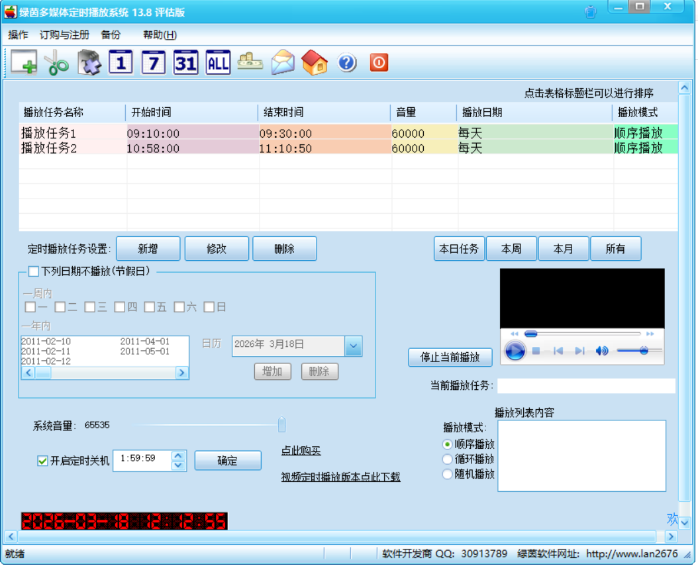
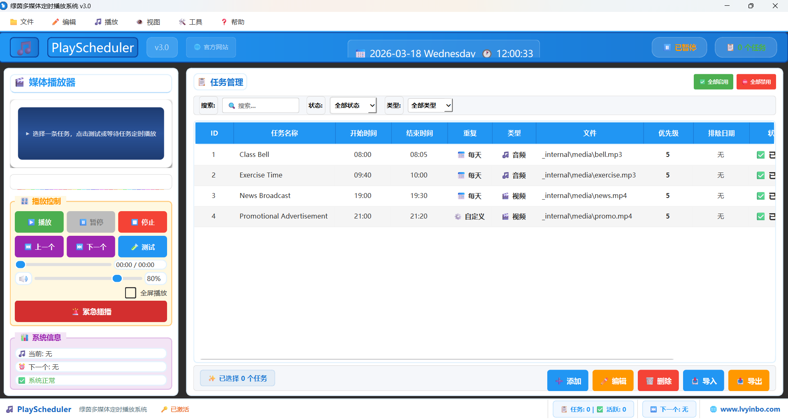
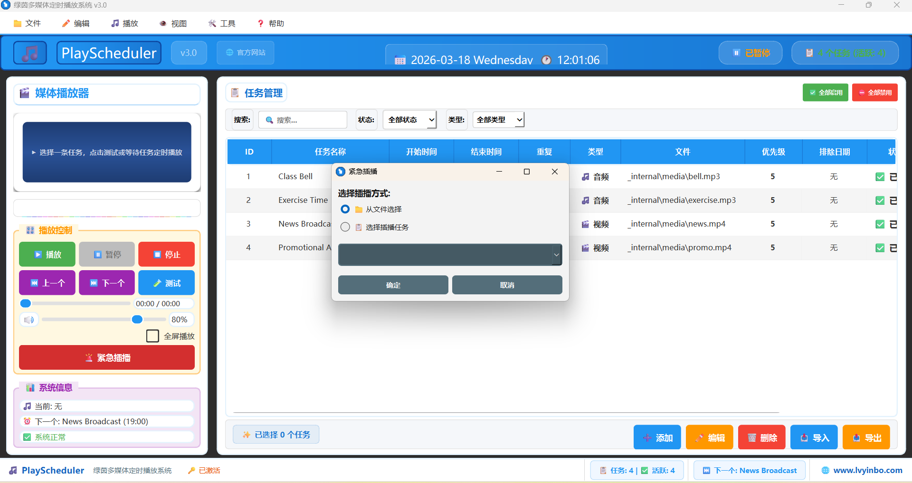
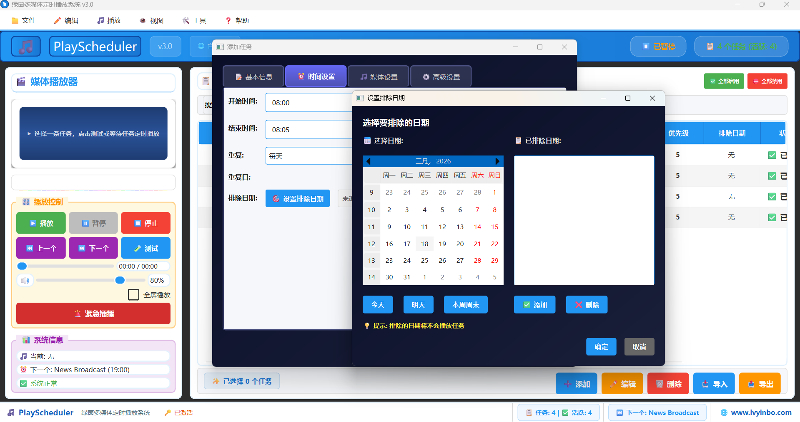
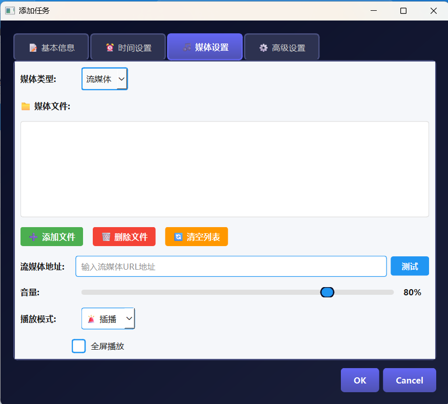

绿茵多媒体定时播放系统是一款拥有十年使用历史的原创正版定时播放软件，专为学校、店铺、商场、工厂、社区广播、广播室、广告机、展厅等场景设计。
软件集自动打铃、背景音乐、音视频定时播放、应急广播于一体，支持紧急插播、定时插播、4K超高清播放、网络流媒体播放，时间精度达秒级，可实现24小时无人值守自动运行，是一套可替代昂贵专业广播设备的智能播放解决方案。
软件操作简单、运行稳定、资源占用小、无广告、无捆绑、不弹窗，支持多达500种音视频格式，兼容性强，十年稳定不崩溃，是国内用户口碑极高的经典定时播放工具。
作为校园广播软件，绿茵多媒体定时播放系统支持上下课铃声自动播放、课间音乐定时播放、眼保健操定时提醒、英语听力考试专用播放等功能，时间精度达到秒级，确保学校作息时间精确无误。学校管理员只需一次配置，即可实现整个学期无人值守自动运行。
作为店铺背景音乐播放器，系统支持按营业时间自动播放背景音乐，支持促销信息定时插播，支持广告视频轮播播放。无论是餐饮店、服装店、美容美发店还是超市商场，都能通过这套定时播放软件提升营业氛围，无需人工操作。
作为工厂车间广播系统，系统支持上下班自动打铃、作息时间定时提醒、厂区广播通知、安全生产提示语音自动播放等功能，支持多时段定时设置，一次配置即可长期自动运行，是工厂企业管理的理想工具。
绿茵多媒体定时播放系统拥有计算机软件著作权（登记号：2013SR084017），是正版授权软件，用户可放心使用。软件支持Windows XP到Windows 11的所有版本，兼容性极强。





支持音乐、铃声、音频、视频文件定时播放
支持按天、按周、指定日期循环执行任务
支持多时段定时设置，一次配置长期自动运行
支持开机自动启动、后台稳定运行、无人值守
支持播放列表管理，顺序播放、随机播放
支持音量控制、定时音量调节
界面简洁、操作简单、老人也能快速上手
无广告、无捆绑、兼容性强、十年稳定不崩溃
支持多达1024组播放列表设置
支持网络播放功能
更新解码器，支持多达500种音视频格式
支持临时广播功能，随时切换手动播放
紧急插播功能，一键中断当前播放，最高优先级播报
定时任务插播，支持单次/每日/每周插播，播后自动续播
支持4K超高清视频播放，大屏播放优化
音频淡入淡出效果，音量均衡调节
时间精度达秒级，支持节假日特殊排期
上下课自动打铃、课间音乐、眼保健操、升旗仪式音乐、英语听力考试专用播放、校园应急广播通知、教室集中控制播放
背景音乐定时播放、促销广播定时插播、广告视频轮播、营业提示音、营业时间自动管理
上下班铃声、作息定时提醒、厂区广播、企业通知播报、安全生产提示
背景音乐、定时提示、广播播放、自动播报、会议室定时提醒、公共区域信息发布
4K超高清视频播放、多显示器扩展、广告轮播、开机自启动播放、远程管理与监控
多媒体展示定时播放、展览解说音频、活动现场背景音乐、临时插播通知
本网站为绿茵多媒体定时播放系统唯一官方下载渠道，正版安全，无捆绑无广告。
功能完整，可免费试用
仅限个人测试、非商业使用
无时间限制
访问共享软件注册中心
选择商业正式版
完成支付
获取注册码
微信号：13632716632
电话号码：13632716632
QQ邮箱：2338125197@qq.com
工作时间：周一至周五 9:00-18:00
下载后直接安装或解压使用
打开软件，添加音乐或视频文件
设置播放时间、播放规则
保存任务，软件将自动按时播放
用了好多年，非常稳定，学校广播上下课铃声从未出错，整个学期都不需要人工干预。
开店背景音乐全靠它，每天自动按营业时间播放，客人说体验很好，我也不用管。
车间打铃十年一直用它，比之前用的专用打铃设备便宜多了，而且功能更多更灵活。
不弹广告，不占资源，社区广播天天用，居民都说声音清晰好听。
A: 是的，软件支持Windows XP及以上所有版本，包括Windows 11。
A: 不需要，软件是本地运行，无需联网即可使用。
A: 没有，软件纯净无广告、无捆绑、不弹窗。
A: 商业授权支持单台电脑永久使用，如需多台使用，请联系客服购买多授权版本。
A: 绿茵多媒体定时播放系统拥有十年历史，是国内最早期的定时播放软件之一。相比同类产品，它具有体积小、无广告、无捆绑、支持500种音视频格式、精确到秒级定时、支持紧急插播等核心优势。
A: 非常简单。打开软件后，只需添加需要播放的音乐或视频文件，设置播放时间和播放规则，保存后即可自动运行。整个过程只需几分钟，无需专业培训，普通用户也能轻松上手。
A: 绿茵多媒体定时播放系统是专为校园广播设计的自动打铃软件，支持按天/按周/指定日期循环播放，支持上下课铃声、课间音乐、眼保健操、英语听力等多种场景，时间精度达秒级，是学校的理想选择。
A: 免费试用版功能完整，可无限制试用，但仅限个人测试使用。商业正式版（300元永久授权）可用于所有商业场景，无任何限制，并免费享受后续版本更新与使用指导。